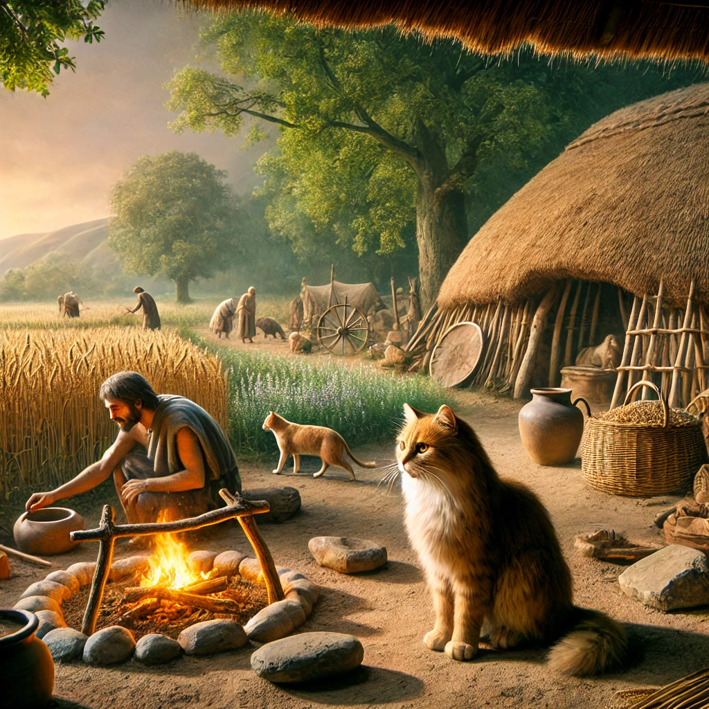
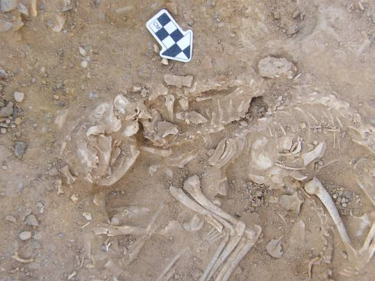
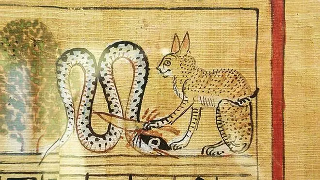
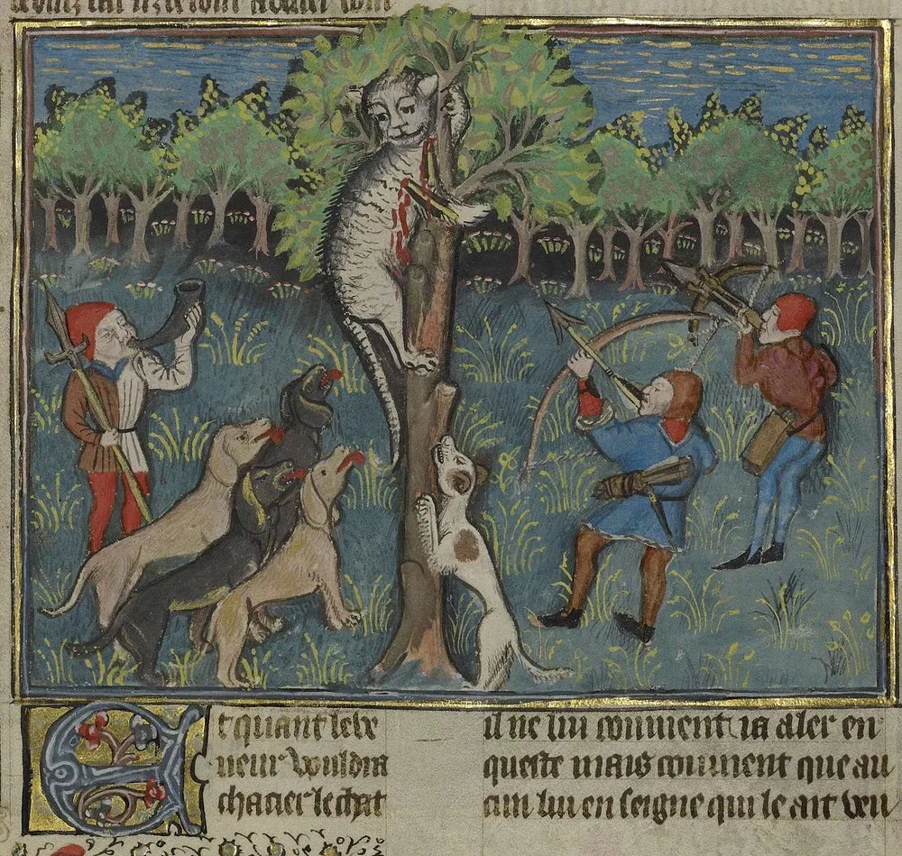
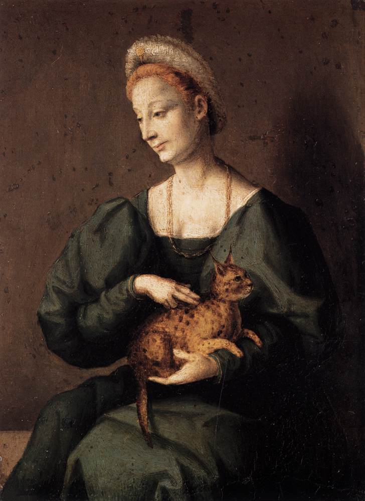
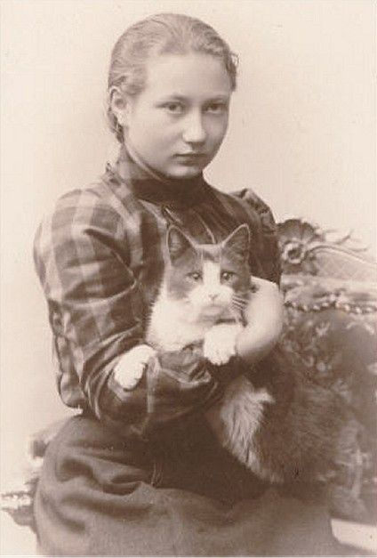

Paws & Claws
La domesticación de los gatos ha sido un proceso fascinante que se ha desarrollado a lo largo de miles de años. A diferencia de los perros, que fueron domesticados activamente por los humanos, los gatos se acercaron de manera independiente a los asentamientos agrícolas, estableciendo una relación simbiótica con las personas. Desde su papel como cazadores de plagas en las primeras civilizaciones hasta convertirse en mascotas adoradas en la actualidad, los gatos han dejado una huella profunda en la historia humana. Esta línea cronológica muestra la evolución de su domesticación con imágenes representativas de cada etapa.
Los gatos salvajes del Cercano Oriente (Felis lybica) comienzan a acercarse a asentamientos humanos en la región del Creciente Fértil (Mesopotamia, Egipto). Se benefician cazando roedores atraídos por los graneros de los agricultores.

En Chipre se encuentra el entierro de un gato junto a un humano, lo que indica una posible relación cercana entre ambas especies.

Los egipcios empiezan a criar gatos en sus hogares, valorándolos como cazadores de plagas y compañeros espirituales. Aparecen en el arte y la mitología egipcia, siendo asociados con la diosa Bastet.

Los gatos son llevados por mercaderes fenicios y egipcios a Grecia, Roma y otras partes de Europa y Asia. Se convierten en animales comunes en barcos, protegiendo las provisiones de roedores.

En la Europa medieval, los gatos comienzan a ser asociados con la brujería y el demonio. Durante la Peste Negra (siglo XIV), su persecución contribuye a la proliferación de ratas, agravando la pandemia.

Se recupera su imagen positiva como cazadores de plagas en hogares y granjas. Se popularizan en la nobleza como mascotas exóticas.

En la época victoriana, surgen exposiciones felinas y las primeras razas de gatos domésticos con características definidas.

Los gatos se convierten en una de las mascotas más queridas en el mundo. Se crean asociaciones de protección animal y registros de razas. Su presencia en la cultura pop crece con la era digital.

Hoy en día, los gatos domésticos (Felis catus) son una de las especies más extendidas y queridas en el mundo, con millones de hogares adoptándolos como parte de la familia.